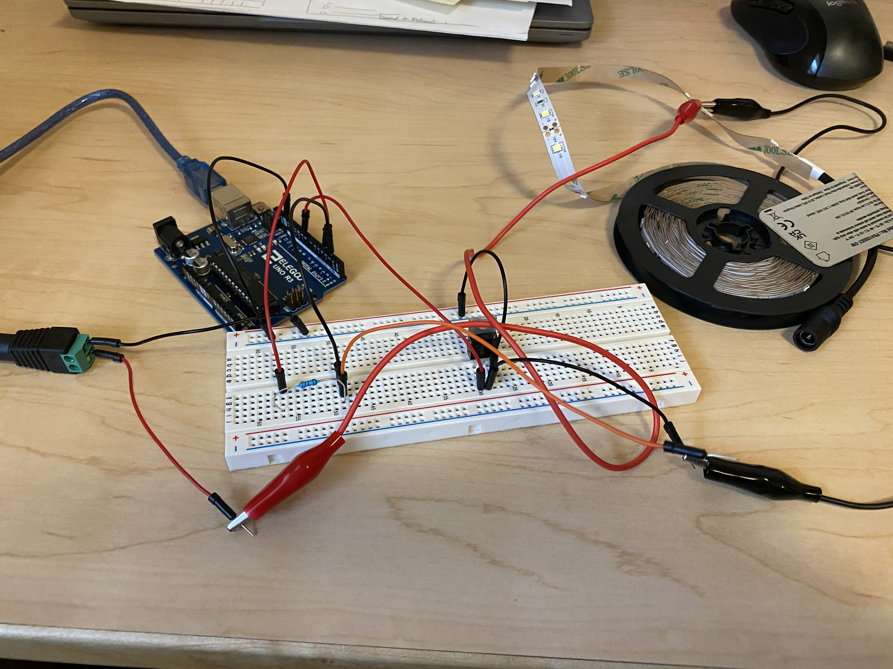

Yuming's Assignment 5!
This is the circuit that I built with a transistor, a capacitor, and an LED strip.
These are my calculations and schematics. I used a 1 Mohm resistor for the the sense wire so that it could be activated by absolute touch.

This gif shows that the LED strip lights up when I touch the capacitor and stays off when I am not touching it.
Here is my Arduino code:
#include // import capacitive sensor library
CapacitiveSensor cs_4_2 = CapacitiveSensor(4,2); // 1 megohm resistor between pins 4 & 2, pin 2 is sensor pin, add wire, metal thing
long sensorValue; // the sensor value
int sensorMin = 1023; // minimum sensor value
int sensorMax = 0; // maximum sensor value
int led = 9; // the PWM pin the LED strip is attached to
int brightness = 0; // how bright the LED strip is
void setup() {
cs_4_2.set_CS_AutocaL_Millis(0xFFFFFFFF); // turn off autocalibrate on channel 1 - just as an example
Serial.begin(9600); // connect to serial monitor
pinMode(led, OUTPUT); // set LED strip as output
}
void loop()
{
long start = millis(); // record time at beginning of loop
// read the sensor:
sensorValue = cs_4_2.capacitiveSensor(30);
// in case the sensor value is outside the range seen during calibration
sensorValue = constrain(sensorValue, sensorMin, sensorMax);
// apply the calibration to the sensor reading
brightness = map(sensorValue, sensorMin, sensorMax, 0, 255);
// set the brightness of pin 9:
analogWrite(led, brightness);
Serial.print(millis() - start); // check on performance in milliseconds
Serial.print("\t"); // tab character for debug window spacing
Serial.println(sensorValue); // print sensor output 1
delay(10); // arbitrary delay to limit data to serial port
}